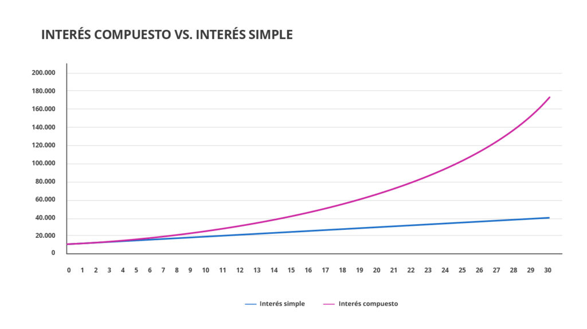

La inversión
Una buena inversión puede hacer crecer tu dinero y ayudarte a dejar un legado para el futuro al destinar parte de tus ahorros a instrumentos financieros.
Invertir es poner a trabajar tu dinero, preferiblemente en una institución bancaria, para obtener ganancias futuras. Para invertir, debe ahorrar por adelantado, tener claro para qué está invirtiendo y cuándo lo necesita.
Ahorrar e invertir son cosas diferentes, una es tener fondos de emergencia y la otra es ganar dinero.
Objetivos
- Cumplir metas de mediano y largo plazo como montar tu propio negocio.
- Asegurar una educación profesional para ti o para tus hijos.
- Hacer crecer tus recursos para asegurar un retiro digno.
- Iniciar o incrementar tu patrimonio: comprar una vivienda. Infórmate te da un paso de ahorrador a inversionista.
Comienzo
El primer paso para comenzar a invertir de manera exitosa es lograr hacer del ahorro un hábito, una disciplina. No es difícil e incluso hoy en día podemos hacerlo de manera automática (hay distintos mecanismos).
¿Cómo invertir?
La forma como tomaremos esta decisión es mediante el análisis cuidadoso de nuestras prioridades y de nuestros objetivos de vida. ¿Qué queremos lograr y en cuánto tiempo? Recordemos que las finanzas personales no son más que un plan, una ruta para lograrlas.
Plazos
Debemos dar prioridad a las metas más lejanas, porque suelen ser las más grandes e importantes. Como el ahorro para el retiro. Eso es más importante que comprar una nueva televisión (por lo menos lo es para mucha gente).
Tolerancia
Cualquier instrumento de inversión conlleva cierto riesgo. Incluso los instrumentos que pensamos que son “seguros” (como algunos pagarés bancarios que pagan tasas por debajo de la inflación y que, por lo tanto, generan el riesgo de que el poder adquisitivo de nuestro dinero se reduzca sustancialmente).
Existen niveles de riesgos, tales como:
- Bajo: Pocas probabilidades de representar pérdidas.
- Medio: Rendimientos considerables pero mayor compromiso de la operación.
- Alto: Exposición que brinda mayores rendimientos a cambio de asumir mayor volatilidad.
Descripción de interés compuesto:
El interés compuesto puede ayudar a que los ahorros crezcan más rápido o hacer que los préstamos sean más costosos.
